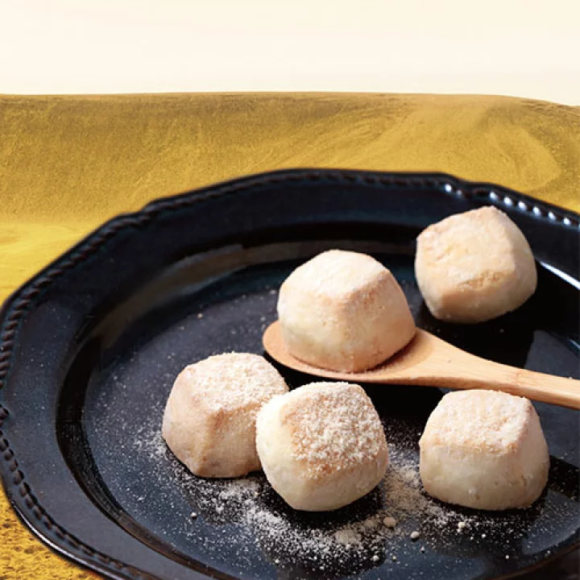
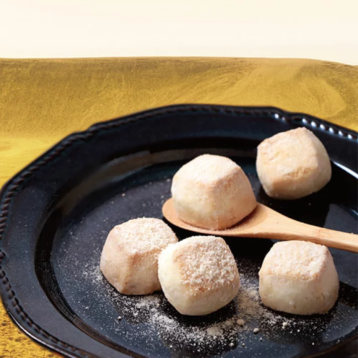
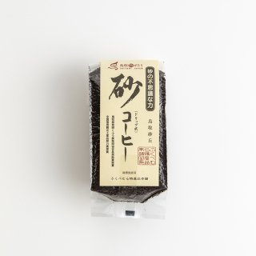
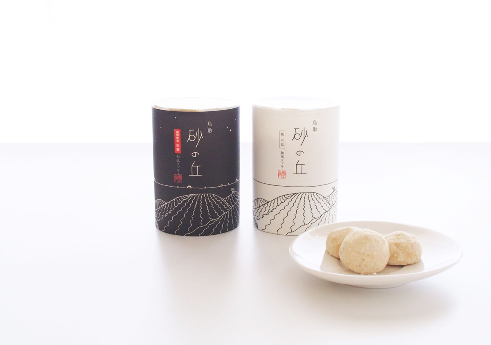
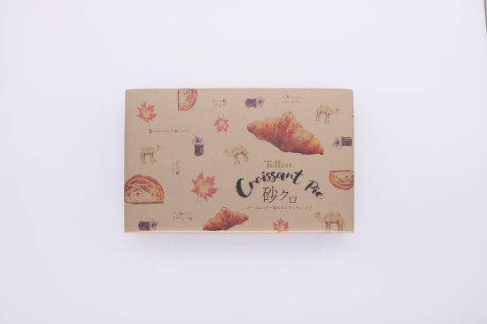
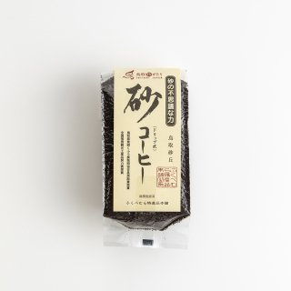
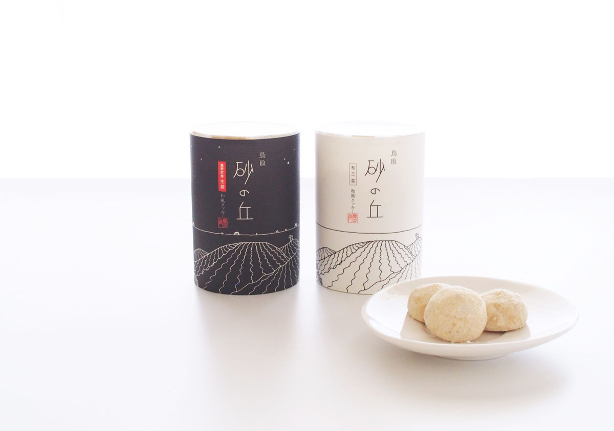
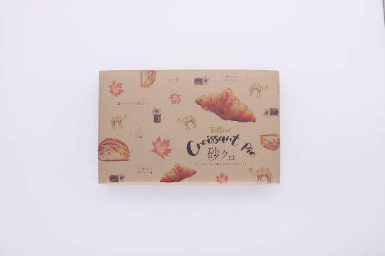

鳥取砂丘の歩き方
-How to enjoy Tottori Sand Dunes?-
現役女子大生が紹介する鳥取砂丘と歩き方。
鳥取砂丘は砂しかない、ただの砂場ではありません。
景色やカフェ、お土産を含めた鳥取砂丘の魅力をお伝えします。

-How to enjoy Tottori Sand Dunes?-
現役女子大生が紹介する鳥取砂丘と歩き方。
鳥取砂丘は砂しかない、ただの砂場ではありません。
景色やカフェ、お土産を含めた鳥取砂丘の魅力をお伝えします。
鳥取砂丘の砂は粒子が細かいため、裸足で楽しむことがオススメです。
冬には雪が積もった神秘的な砂丘が見られます。
見る度に姿を変える砂丘は何度行っても楽しめること間違いなし。


隈研吾氏による砂丘をモチーフにデザインされたカフェ。
屋上には開放的な展望台も。

隈鳥取の食材でしあえげた口溶け滑らかなプリンが売り。
看板メニューの「砂プリン」はプリンに砂をかけて食べるそう。
落ち着いて作業をするのも、色々な人と話してアイディアを膨らますのにもぴったり。
外は芝生で、身体を動かすことで集中力維持も。
鳥取砂丘にあるかき氷専門店。鳥取の名峰、大山の雪解け水で
出来た氷は口溶けがよく上品な味をしています。

 

 




